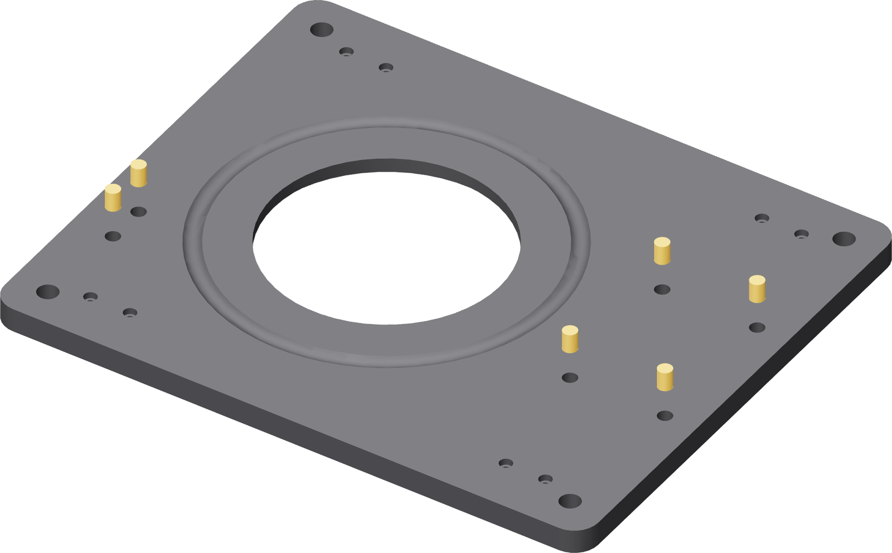
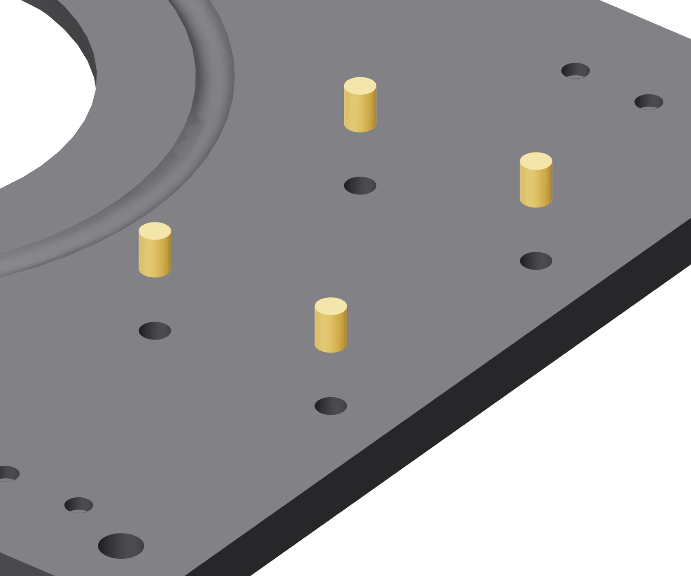

The base: six M5
Four in a rectangle where the motor tower lands, two in a close pair at the far left where the ground tower does. All six go down into the base's top face.


- Fit the M5 tip. These bores are Ø7.0 mm and 9.7 mm deep — deeper than any M3 pocket on the fixture.
- Press all four tower inserts first, then the two ground-tower inserts.
- Sight across the plate. Every rim level with the top face.
Not the bench holes
The four Ø10 mm holes near the corners are for clamping the fixture to the bench. Nothing goes in them.